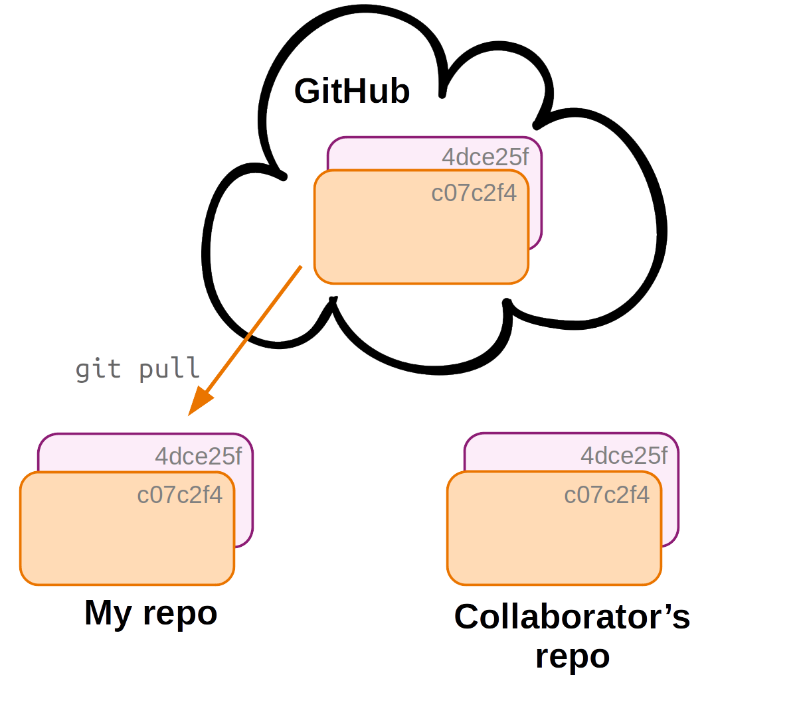
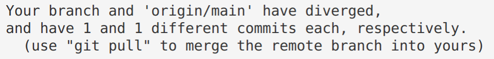
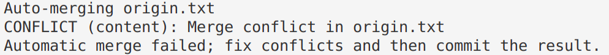

Git: Branching, collaborating, and undoing
This page contains optional self-study material if you want to dig deeper into Git. Some of it may also be useful as a reference in case you run into problems while trying to use Git.
- Branching & merging
- Collaboration with Git: multi-user remote workflows
- Contributing to repositories: Forking & Pull Requests
- Undoing (& viewing) changes that have been committed
- Miscellaneous Git
1 Branching & merging
In this section, you’ll learn about using so-called “branches” in Git. Branches are basically parallel versions of your repository, which allow you or your collaborators to experiment or create variants without affecting existing functionality or others’ work.
1.1 A repo with a couple of commits
First, you’ll create a dummy repo with a few commits by running a script (following CSB).
cd /fs/ess/PAS2700/users/$USER/CSB/git/sandboxTake a look at the script you will run to create your repo:
cat ../data/create_repository.sh#!/bin/bash
# function of the script:
# sets up a repository and
# immitates workflow of
# creating and commiting two text files
mkdir branching_example
cd branching_example
git init
echo "Some great code here" > code.txt
git add .
git commit -m "Code ready"
echo "If everything would be that easy!" > manuscript.txt
git add .
git commit -m "Drafted paper"Run the script:
bash ../data/create_repository.shInitialized empty Git repository in /fs/ess/PAS2700/users/jelmer/CSB/git/sandbox/branching_example/.git/
[main (root-commit) 3c59d8a] Code ready
1 file changed, 1 insertion(+)
create mode 100644 code.txt
[main 7ba8ca4] Drafted paper
1 file changed, 1 insertion(+)
create mode 100644 manuscript.txtAnd move into the repository’s dir:
cd branching_exampleLet’s see what has been done in this repo:
git log --oneline7ba8ca4 (HEAD -> main) Drafted paper
3c59d8a Code readyWe will later modify the file code.txt — let’s see what it contains now:
cat code.txtSome great code here1.2 Using branches in Git
You now want to improve the code, but these changes are experimental, and you want to retain your previous version that you know works. This is where branching comes in. With a new branch, you can make changes that don’t affect the main branch, and can also keep working on the main branch:

(Note that the
main branch is here called “master”.)Creating a new branch
First, create a new branch as follows, naming it fastercode:
git branch fastercodeList the branches:
# Without args, git branch will list the branches
git branch fastercode
* mainIt turns out that you created a new branch but are still on the main branch, as the * indicates.
You can switch branches with git checkout:
git checkout fastercodeSwitched to branch 'fastercode'And confirm your switch with git branch:
git branch* fastercode
mainNote that you can also tell from the git status output on which branch you are:
git statusOn branch fastercode
nothing to commit, working tree cleanMaking experimental changes on the new branch
You edit the code, stage and commit the changes:
echo "Yeah, faster code" >> code.txt
cat code.txtSome great code here
Yeah, faster codegit add code.txt
git commit -m "Managed to make code faster"[fastercode 21f1828] Managed to make code faster
1 file changed, 1 insertion(+)Let’s check the log again, which tells you that the last commit was made on the fastercode branch:
git log --oneline21f1828 (HEAD -> fastercode) Managed to make code faster
7ba8ca4 (main) Drafted paper
3c59d8a Code readyMoving back to the main branch
You need to switch gears and add references to the paper draft. Since this has nothing to do with your attempt at faster code, you should make these changes back on the main branch:
# Move back to the 'main' branch
git checkout mainSwitched to branch 'main'What does code.txt, which we edited on fastercode, now look like?
cat code.txtSome great code hereSo, by switching between branches, your working dir contents has changed!
Now, while still on the main branch, add the reference, stage and commit:
echo "Marra et al. 2014" > references.txt
git add references.txt
git commit -m "Fixed the references"[main 1bf123f] Fixed the references
1 file changed, 1 insertion(+)
create mode 100644 references.txtNow that you’ve made changes to both branches, let’s see the log in “graph” format with --graph, also listing all branches with --all — note how it tries to depict these branches:
git log --oneline --graph --all* 1bf123f (HEAD -> main) Fixed the references
| * 21f1828 (fastercode) Managed to make code faster
|/
* 7ba8ca4 Drafted paper
* 3c59d8a Code readyFinishing up on the experimental branch
Earlier, you finished speeding up the code in the fastercode branch, but you still need to document your changes. So, you go back:
git checkout fastercodeSwitched to branch 'fastercode'Do you still have the references.txt file from the main branch?
lscode.txt manuscript.txtNope, your working dir has changed again.
Then, add the “documentation” to the code, and stage and commit:
echo "# My documentation" >> code.txt
git add code.txt
git commit -m "Added comments to the code"[fastercode d09f611] Added comments to the code
1 file changed, 1 insertion(+)Check the log graph:
git log --oneline --all --graph* d09f611 (HEAD -> fastercode) Added comments to the code
* 21f1828 Managed to make code faster
| * 1bf123f (main) Fixed the references
|/
* 7ba8ca4 Drafted paper
* 3c59d8a Code readyMerging the branches
You’re happy with the changes to the code, and want to make the fastercode version the default version of the code. This means you should merge the fastercode branch back into main. To do so, you first have to move back to main:
git checkout mainSwitched to branch 'main'Now you are ready to merge with the git merge command. You’ll also have to provide a commit message, because a merge is always accompanied by a commit:
git merge fastercode -m "Much faster version of code"Merge made by the 'ort' strategy.
code.txt | 2 ++
1 file changed, 2 insertions(+)Once again, check the log graph, which depicts the branches coming back together:
git log --oneline --all --graph* 5bb84cd (HEAD -> main) Much faster version of code
|\
| * d09f611 (fastercode) Added comments to the code
| * 21f1828 Managed to make code faster
* | 1bf123f Fixed the references
|/
* 7ba8ca4 Drafted paper
* 3c59d8a Code readyCleaning up
You no longer need the fastercode branch, so you can delete it as follows:
git branch -d fastercodeDeleted branch fastercode (was d09f611).1.3 Branching and merging – Workflow summary

Overview of commands used in the branching workflow
# (NOTE: Don't run this)
# Create a new branch:
git branch mybranch
# Move to new branch:
git checkout mybranch
# Add and commit changes:
git add --all
git commit -m "my message"
# Done with branch - move back to main trunk and merge
git checkout main
git merge mybranch -m "Message for merge"
# And [optionally] delete the branch:
git -d mybranchExercise (Intermezzo 2.2)
- (a) Move to the directory
CSB/git/sandbox.
Solution
cd /fs/ess/PAS2700/users/$USER/CSB/git/sandbox- (b) Create a directory
thesisand turn it into a Git repository.
Solution
mkdir thesis
cd thesis
git init- (c) Create the file
introduction.txtwith the line “Best introduction ever.”
Solution
echo "The best introduction ever" > introduction.txt- (d) Stage
introduction.txtand commit with the message “Started introduction.”
Solution
git add introduction.txt
git commit -m "Started introduction"- (e) Create the branch
newintroand change into it.
Solution
git branch newintro
git checkout newintro- (f) Overwrite the contents of
introduction.txt, create a new filemethods.txt, stage, and commit.
Solution
echo "A much better introduction" > introduction.txt
touch methods.txt
git add --all
git commit -m "A new introduction and methods file"- (g) Move back to
main. What does your working directory look like now?
Solution
git checkout main
ls # Changes made on the other branch are not visible here!
cat introduction.txt- (h) Merge in the
newintrobranch, and confirm that the changes you made there are now in your working dir.
Solution
git merge newintro -m "New introduction"
ls
cat introduction.txt- (i) Bonus: Delete the branch
newintro.
Solution
git branch -d newintro2 Collaboration with Git: multi-user remote workflows
In a multi-user workflow, your collaborator can make changes to the repository (committing to local, then pushing to remote), and you need to make sure that you stay up-to-date with these changes.
Synchronization between your and your collaborator’s repository happens via the remote, so now you will need a way to download changes from the remote that your collaborator made. This happens with the git pull command.
First, a second user, your collaborator, downloads (clones) the online repo. They should also receive admin rights on the repo (not shown - done on GitHub).

Then, your collaborator commits changes to their local copy of the repository.

Before you can receive these changes, your collaborator will need to push their changes to the remote, which you can access too.

To update your local repo with the changes made by your collaborator, you pull in the changes from the remote. Now all 3 copies of the repo are in sync again!
In a multi-user workflow, changes made by different users are shared via the online copy of the repo. But syncing is not automatic:
- Changes to your local repo remain local-only until you push to remote.
- Someone else’s changes to the remote repo do not make it into your local repo until you pull from remote.
However, when your collaborator has made changes, Git will tell you about “divergence” between your local repository and the remote when you run git status:
# (Don't run this)
git status
In a multi-user workflow, you should use use git pull often, since staying up-to-date with your collaborator’s changes will reduce the chances of merge conflicts.
2.1 Add a collaborator in GitHub
You can add a collaborator to a repository on GitHub as follows:
- Go to the repository’s settings:
- Find and click
Manage access:

- Click
Invite a collaborator:

2.2 Merge conflicts
A so-called merge conflict means that Git is not able to automatically merge two branches, which occurs when all three of the following conditions are met:
- You try to merge two branches (including when pulling from remote: a pull includes a merge)
- One or more file changes have been committed on both of these branches since their divergence.
- Some of these changes were made in the same part(s) of file(s).
When this occurs, Git has no way of knowing which changes to keep, and it will report a merge conflict as follows:

Resolving a merge conflict
When Git reports a merge conflict, follow these steps:
- Use
git statusto find the conflicting file(s).

Open and edit those file(s) manually to a version that fixes the conflict (!).
Note below that Git will have changed these file(s) to add the conflicting lines from both versions of the file, and to add marks that indicate which lines conflict.
You have to manually change the contents in your text editor to keep the conflicting content that you want, and to remove the indicator marks that Git made.
On the Origin of Species # Line preceding conflicting line <<<<<<< HEAD # GIT MARK 1: Next line = current branch Line 2 - from main # Conflict line: current branch ======= # GIT MARK 2: Dividing line Line 2 - from conflict-branch # Conflict line: incoming branch >>>>>>> conflict-branch # GIT MARK 3: Prev line = incoming branchUse
git addto tell Git you’ve resolved the conflict in a particular file:git add origin.txt
Once all conflicts are resolved, use
git statusto check that all changes have been staged. Then, usegit committo finish the merge commit:git commit -m "Solved the merge conflict"
VS Code has some nice functionality to make Step 2 (resolving the conflict) easier:
code <conflicting-file> # Open the file in VS CodeIf you click on “Accept Current Change” or “Accept Incoming Change”, etc., it will keep the desired lines and remove the Git indicator marks. Then, save and exit.
3 Contributing to repositories: Forking & Pull Requests
3.1 What can you do with someone else’s GitHub repository?
In some cases, you may be interested in working in some way with someone else’s repository that you found on GitHub. If you do not have rights to push, you can:
- Clone the repo and make changes locally (as we have been doing with the
CSBrepo). When you do this, you can also periodically pull to remain up-to-date with changes in the original repo. - Fork the repository on GitHub and develop it independently. Forking creates a new personal GitHub repo, to which you can push.
- Using a forked repo, you can also submit a Pull Request with proposed changes to the original repo: for example, if you’ve fixed a bug in someone else’s program.
If you’re actually collaborating on a project, though, you should ask your collaborator to give you admin rights for the repo, which makes things a lot easier than working via Pull Requests.
Forking a GitHub repository
You can follow along by e.g. forking my originspecies repo.
- Go to a GitHub repository, and click the “Fork” button in the top-right:
- You may be asked which account to fork to: select your account.
- Now, you have your own version of the repository, and it is labeled explicitly as a fork:

Forking workflow
You can’t directly modify the original repository, but you can:
- First, modify your fork (with local edits and pushing).
- Then, submit a so-called Pull Request to the owner of the original repo to pull in your changes.
- Also, you can also easily keep your fork up-to-date with changes to the original repository.

Editing the forked repository
To clone your forked GitHub repository to a dir at OSC, start by creating a dir there — for example:
mkdir /fs/ess/PAS2700/users/$USER/week03/fork_test
cd /fs/ess/PAS2700/users/$USER/week03/fork_testThen, find the URL for your forked GitHub repository by clicking the green Code button. Make sure you get the SSH URL (rather than the HTTPS URL), and click the clipboard button next to the URL to copy it:
Then, type git clone and a space, and paste the URL, e.g.:
git clone git@github.com:jelmerp/originspecies.gitCloning into 'originspecies'...
remote: Enumerating objects: 31, done.
remote: Counting objects: 100% (31/31), done.
remote: Compressing objects: 100% (19/19), done.
remote: Total 31 (delta 4), reused 30 (delta 3), pack-reused 0
Receiving objects: 100% (31/31), done.
Resolving deltas: 100% (4/4), done.Now, you can make changes to the repository in the familiar way, for example:
echo "# Chapter 1. Variation under domestication" > origin.txt
git add origin.txt
git commit -m "Suggested title for first chapter."And note that you can push without any setup — because you cloned the repository, the remote setup is already done (and you have permission to push because its your own repo on GitHub and you have set up GitHub authentication):
git pushCreating a Pull Request
If you then go back to GitHub, you’ll see that your forked repo is “x commit(s) ahead” of the original repo:

Click Pull request, and check whether the right repositories and branches are being compared (and here you can also see the changes that were made in the commits):
If it looks good, click the green Create Pull Request button:

Give your Pull Request a title, and write a brief description of your changes:
Keeping your fork up-to-date
As you saw, you can’t directly push to original repo but instead have to submit a Pull Request (yes, this terminology is confusing!).
But, you can create an ongoing connection to the original repo, which you can use to periodically pull to keep your fork up-to-date. This works similarly to connecting your own GitHub repo, but you should give the remote a different nickname than origin — the convention is upstream:
# Add the "upstream" connection
git remote add upstream git@github.com:jelmerp/originspecies.git
# List the remotes:
git remote -vorigin git@github.com:pallass-boszanger/originspecies.git (fetch)
origin git@github.com:pallass-boszanger/originspecies.git (push)
upstream git@github.com:jelmerp/originspecies.git (fetch)
upstream git@github.com:jelmerp/originspecies.git (push)# Pull from the upstream repository:
git pull upstream main4 Undoing (& viewing) changes that have been committed
Whereas on the first Git page, we learned about undoing changes that have not been committed, here you’ll see how you can undo changes that have been committed.
4.1 Viewing past versions of the repository
Before undoing committed changes, you may want to look at earlier states of your repo, e.g. to know what to revert to:
First, print an overview of past commits and their messages:
# (NOTE: example code in this and the next few boxes - don't run as-is) git log --onelineFind a commit you want to go back to, and look around in the past:
git checkout <sha-id> # Replace <sha-id> by an actual hash less myfile.txt # Etc. ...Then, you can go back to where you were originally as follows:
git checkout main
The next section will talk about strategies to move your repo back to an earlier state that you found this way.
If you just want to retrieve/restore an older version of a single file that you found while browsing around in the past, then a quick way can be: simply copy the file to a location outside of your repo, move yourself back to the “present”, and move the file back into your repo, now in the present.
git checkout to view files from older versions of your repo.Figure from https://software-carpentry.org.
git checkout
Note the confusing re-use of git checkout! We have now seen git checkout being used to:
- Move between branches
- Move to previous commits to explore (figure below)
- (Revert files back to previous states — as an alternative to
git restore)
4.2 Undoing entire commits
To undo commits, i.e. move the state of your repository back to how it was before the commit you want to undo, there are two main commands:
git revert: Undo the changes made by commits by reverting them in a new commit.git reset: Delete commits as if they were never made.
Undoing commits with git revert
A couple of examples of creating a new commit that will revert all changes made in the specified commit:
# Undo changes by the most recent commit:
git revert HEAD
# Undo changes by the second-to-last commit:
git revert HEAD^
# Undo changes by a commit identified by its checksum:
git revert e1c5739Undoing commits with git reset
git reset is quite complicated as it has three modes (--hard, --mixed (default), and --soft) and can act either on individual files and on entire commits. To undo a commit, and:
Stage all changes made by that commit:
# Resetting to the 2nd-to-last commit (HEAD^) => undoing the last commit git reset --soft HEAD^Put all changes made by that commit as uncomitted working-dir changes:
# Note that '--mixed' is the default, so you could omit that git reset --mixed HEAD^Completely discard all changes made by that commit:
git reset --hard HEAD^
git reset erases history
Undoing with git revert is much safer than with git reset, because git revert does not erase any history.
For this reason, some argue you should not use git reset on commits altogether. At any rate, you should never use git reset for commits that have already been pushed online.
4.3 Viewing & reverting to earlier versions of files
Above, you learned to undo at a project/commit-wide level. But you can also undo things for specific files:
Get a specific version of a file from a past commit:
# Retrieve the version of README.md from the second-to-last commit git checkout HEAD^^ -- README.md# Or: Retrieve the version of README.md from a commit IDed by the checksum git checkout e1c5739 -- README.mdNow, your have the old version in the working dir & staged, which you can optionally check with:
# Optional: check the file at the earlier state cat README.md git statusYou can go on to commit this version from the past, or go back to the current version, as we will do below:
git checkout HEAD -- README.md
git checkout
Be careful with git checkout: any uncommitted changes to this file would be overwritten by the past version you retrieve!
An alternative method to view and revert to older versions of specific files is to use git show.
View a file from any commit as follows:
# Retrieve the version of README.md from the last commit git show HEAD:README.md# Or: Retrieve the version of README.md from a commit IDed by the checksum git show ad4ca74:README.mdRevert a file to a previous version:
git show ad4ca74:README.md > README.md
5 Miscellaneous Git
5.1 Amending commits
Let’s say you forgot to add a file to a commit, or notice a silly typo in something we just committed. Creating a separate commit for this seems “wasteful” or even confusing, and including these changes along with others in a next commit is also likely to be inappropriate. In such cases, you can amend the previous commit.
First, stage the forgotten or fixed file:
# (NOTE: don't run this)
git add myfile.txtThen, amend the commit, adding --no-edit to indicate that you do not want change the commit message:
# (NOTE: don't run this)
git commit --amend --no-editBecause amending a commit “changes history”, some recommend avoiding this altogether. For sure, do not amend commits that have been published in (pushed to) the online counterpart of the repo.
5.2 git stash
Git stash can be useful when you need to pull from the remote, but have changes in your working dir that:
- Are not appropriate for a separate commit
- Are not worth starting a new branch for
Here is an example of the sequence of commands you can use in such cases.
Stash changes to tracked files with
git stash:# (Note: add option '-u' if you need to include untracked files) git stashPull from the remote repository:
git pull“Apply” (recover) the stashed changes back to your working dir:
git stash apply
5.3 A few more tips
Git will not pay attention to empty directories in your working dir.
You can create a new branch and move to it in one go using:
git checkout -b <new-branch-name>To show commits in which a specific file was changed, you can simply use:
git log <filename>“Aliases” (command shortcuts) can be useful with Git, and can be added in two ways:
By adding lines like the below to the
~/.gitconfigfile:[alias] hist = log --graph --pretty=format:'%h %ad | %s%d [%an]' --date=short last = log -1 HEAD # Just show the last commitWith the
git configcommand:git config --global alias.last "log -1 HEAD"